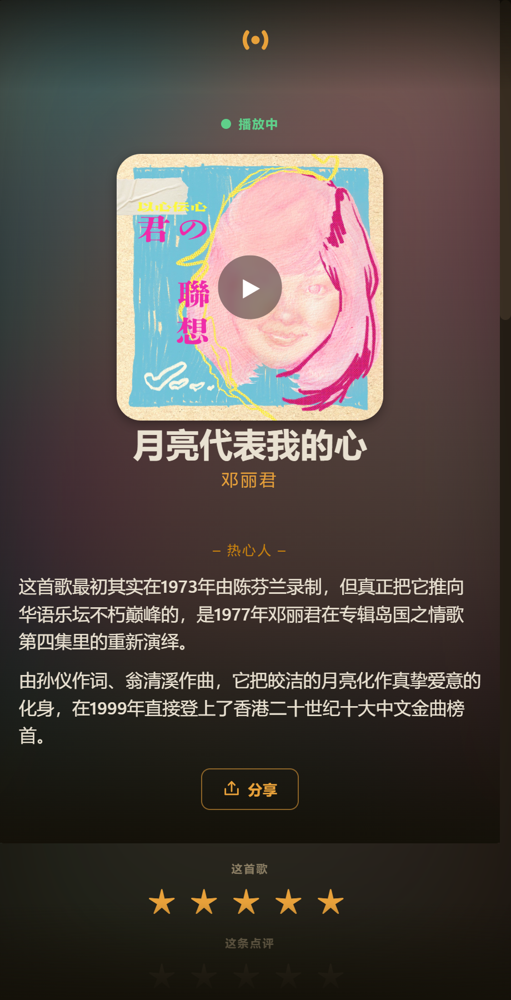
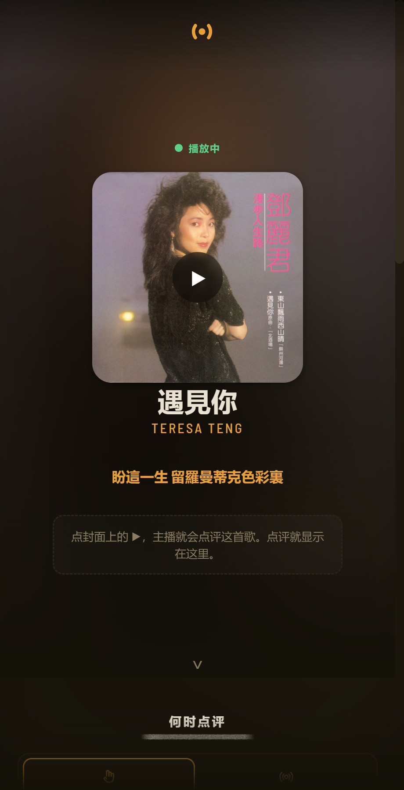
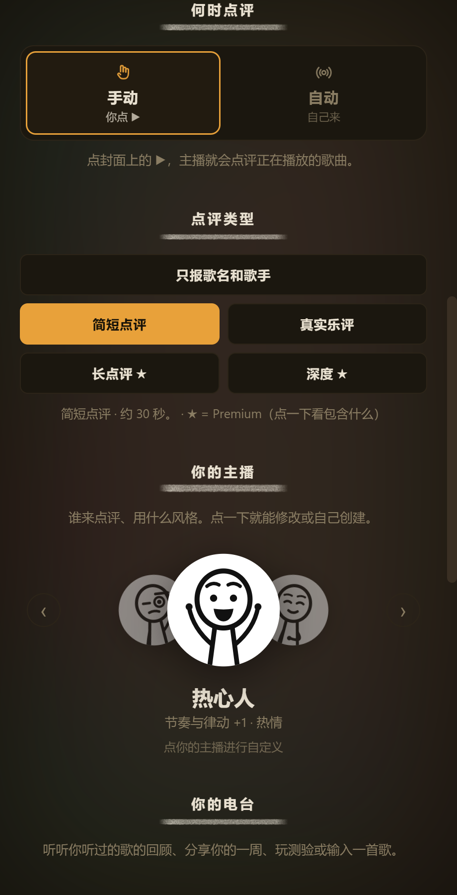
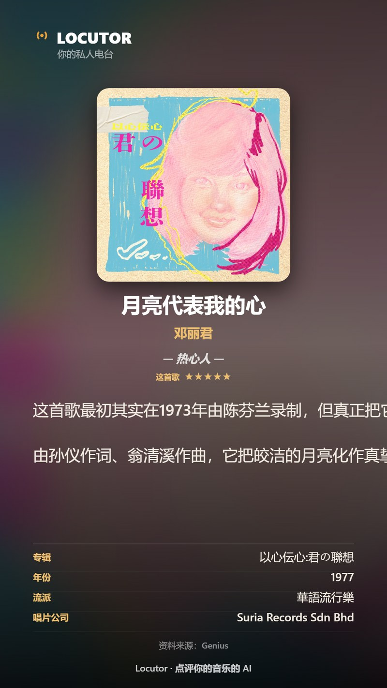
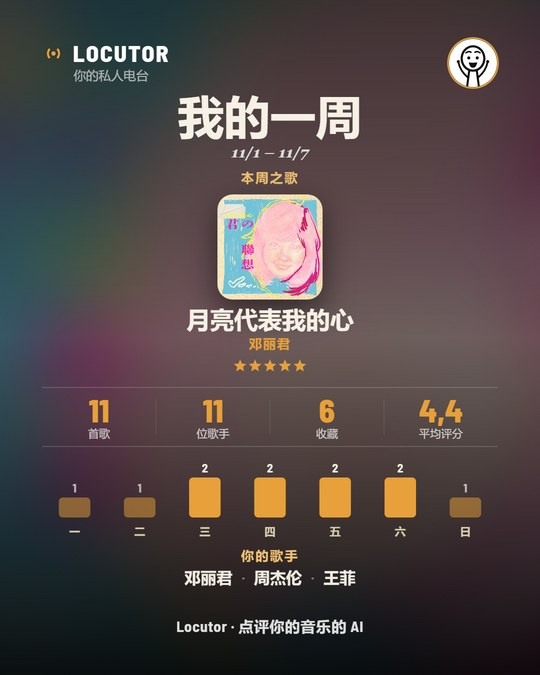
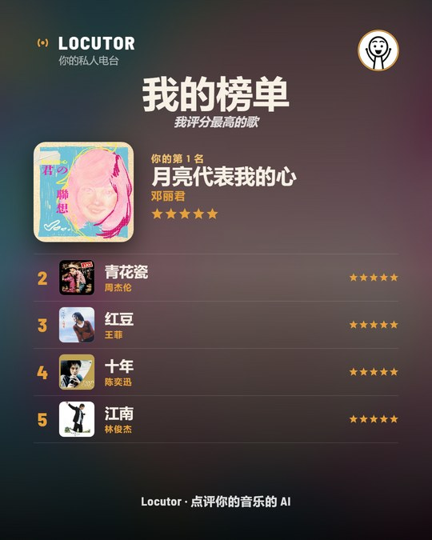
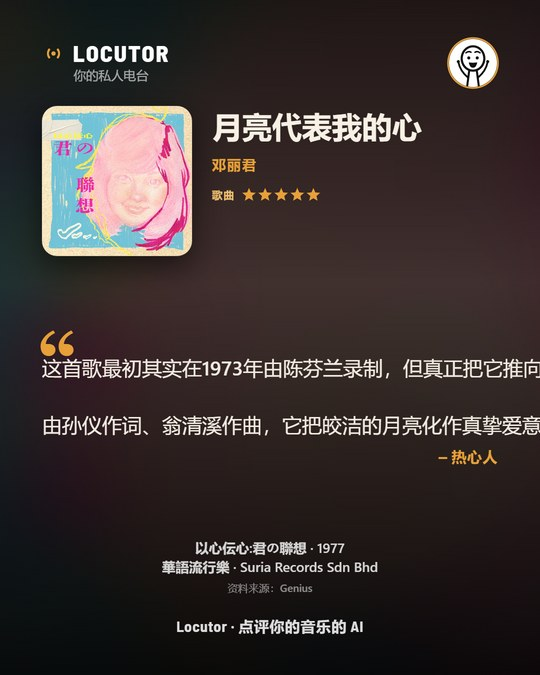

现在试听 · 无需安装
选一首歌，听听你的主播。
当这首歌响起时，Locutor 就是这样说的：真实的故事，大声讲出来，不到一分钟。
直播中
点评和语音由 AI 根据核实过的资料生成（维基百科、Genius、MusicBrainz）。在应用里，由你自己的 AI 针对正在播放的歌即时生成。
AI 主播大声点评你 安卓手机 或 电脑上正在播放的歌，资料来自 可靠来源. 不用麦克风，而且 免费 使用你自己的密钥。
Windows 10/11 · 不用麦克风 · 无需任何权限 · 免费

当这首歌响起时，Locutor 就是这样说的：真实的故事，大声讲出来，不到一分钟。
这个版本的新内容，我们像印度、中国、巴西、沙特和肯尼亚的用户一样测试过。
应用支持 Español、English、中文、हिन्दी 和 العربية，主播会说 50 多种语言。能识别任何音乐应用，从 Spotify 到 QQ 音乐、网易云音乐。
每条点评讲的是这首歌的故事，而不是你点播的那一秒；直截了当，有资料，开头不重复。
一个按钮：卡片和点评语音一起发到微信、WhatsApp 或任何地方。也可以保存到相册。
另外：20 家 AI 服务商（免费的都有标注）、新的声音（Microsoft Azure、Google Cloud、Deepgram、Sarvam）、主播新形象、语速调节，以及几天没听时的提醒。
你的主播有个性：讲每首歌的故事，由你决定何时开口，而且言之有物。

同步歌词会高亮 当前那一句 ，同时你的主播 为你讲述 这首歌的故事。就像有人在旁边讲解的卡拉 OK。

在 手动模式下，点封面上的 ▶ 就会点评。在 自动模式下，每首新歌都会自己点评——设置好就不用管：每两首一次、每首一次或每首两次。还可以选择 关注点：歌词、制作、历史……

它不是随口乱说。点评前，它会识别歌曲并在可靠来源中查资料。



把点评保存为 卡片 ——包含封面、你的评分、点评和唱片信息——或分享为 金句，专为社交媒体设计。
九种现成的性格——或者自己创建：关注点、语气和个性。
你自己 AI 的声音（用免费的 Gemini 密钥）、免费的自然语音，或用你的密钥使用 Microsoft Azure、Google Cloud、ElevenLabs、Cartesia、Deepgram、Sarvam 的声音。每位主播一个。
卡片和点评语音一次发出，或保存到相册。带不带语音，随你。
按方面分析——歌词、制作、历史……——保存为 PDF，附封面和你的评分。Premium 功能。
关于你听过的歌的问答游戏，题目来自点评内容及其出处。
全球 20 家服务商：免费的 Gemini、Groq、Mistral、Cerebras、OpenRouter，或 DeepSeek、Kimi、OpenAI、Claude、Grok……如果你的 AI 繁忙或额度用完，会自动换轻量模型或你的其他密钥。
不用复杂设置。一打开就能用；加一个免费 AI 密钥，就能真正点评。
在你常用的应用里：QQ 音乐、网易云音乐、酷狗、Spotify、Apple Music……Locutor 会自动识别 正在播放的歌：在 Windows 上无需权限；在安卓上只需一个（知道正在播放哪首歌）。不用麦克风。
✓ 免费开始你的主播会大声点评这首歌。或设为 自动 ，它会自动点评每首新歌。
没有密钥时，会用资料报出歌曲。有了 免费、无需银行卡的 密钥（如 SiliconFlow、Gemini 或 Groq），就能用 AI 点评：应用会引导你并自动识别。
Locutor 能识别 任何音乐应用 里正在播放的歌（手机或电脑），AI 由你从全球服务商中选择：会先显示你所在地区最常用的。
Spotify · YouTube Music · Apple Music · Amazon Music · Deezer · Tidal · SoundCloud · Pandora · Qobuz · JioSaavn · Gaana · Wynk · Hungama · QQ 音乐 · 网易云音乐 · 酷狗 · 酷我 · Anghami · Boomplay · Audiomack · Mdundo · Яндекс Музыка · VK Музыка · Звук · Melon · Genie · FLO · Bugs · VIBE · LINE MUSIC · AWA · JOOX · KKBOX · Resso · Palco MP3 · Sua Música · Claro Música
播放器三星 · 小米 · 华为 · OPPO · Poweramp · VLC · foobar2000 · MusicBee · AIMP · Winamp · 以及浏览器里的网页版
免费 无需付费Gemini · Groq · Mistral · Cerebras · OpenRouter · Hugging Face · SiliconFlow · SEA-LION
付费OpenAI / ChatGPT · Claude · Grok · DeepSeek · Kimi · GLM · Sarvam · Solar · PLaMo · Sabiá
粘贴密钥，应用会识别它属于哪家 AI。可以保存多个：一个额度用完就用另一个。
免费自然语音 · 你的 AI 的声音（OpenAI、Gemini、Groq、Sarvam）· Microsoft Azure · Google Cloud · ElevenLabs · Cartesia · Deepgram · 系统声音
应用支持 Español、English、中文、हिन्दी 和 العربية。主播会说 50 多种语言。
选一个适合你的——或从零创建自己的。
把歌曲和它的血脉联系起来：受谁影响，又影响了谁。
教你怎么听：几处你没注意到的细节，又不像上课。
它是怎么做出来的：谁制作的、录音室里的决定、最终留下的那一版。
用老粉丝的眼光看它：B 面、传奇现场、只有真爱才知道的细节。
扭转含义的那一句，歌者的坦白。
选择它的关注点、语气，甚至某人的说话方式。
Locutor 不使用麦克风，也不录音。它只读取正在播放的歌名和歌手，以便点评。 无需任何权限 ——不用摄像头、文件或账户。你的密钥 加密保存在你自己的设备上，绝不上传服务器。没有广告，不卖数据。
AI 由你提供（你的密钥）。免费版足够入门；Premium 解锁 深度点评 点评并取消每日上限。
AI 始终是 你的密钥 （Gemini、Groq、Mistral、Cerebras、OpenRouter 等都有免费选项）。Premium 只解锁应用的高级模式；我们不会在服务器上保存你的密钥。
不会。Locutor 只读取 歌名和歌手 （正在播放的歌曲，通过系统获取）。它不访问麦克风，也不录任何音频。在 Windows 上 不需要任何权限；在安卓上只需要安卓所说的 “通知使用权”，这是知道正在播放哪首歌的唯一方式（不读取你的消息）。
几乎总是这四步之一： 添加免费密钥，授予权限（安卓），播放音乐 在同一台设备上 （不是音箱或电视），然后点 封面上的 ▶。我们在 一段 2 分钟的视频里讲解了，包括常见提示和处理方法。
需要你自己的——而且很简单：粘贴密钥，应用会自动识别。有 免费、无需银行卡的选项：SiliconFlow、Gemini、Groq、Mistral、Cerebras、OpenRouter、Hugging Face 或 SEA-LION。也可以用 DeepSeek、Kimi、GLM、OpenAI、Claude、Grok、Sarvam、Solar、PLaMo 或 Sabiá。可以保存 多个：一个额度用完，应用会自动换另一个。
Locutor 就像一个 考据严谨的搜索器：点评前会查询可靠来源——Genius、维基百科、MusicBrainz、Last.fm 和 iTunes——并以此为依据。每张卡片都会显示每条资料的出处。
能。支持 QQ 音乐、网易云音乐、酷狗、酷我、Spotify（免费或 Premium）、YouTube Music、Apple Music、KKBOX……以及几乎任何在 Windows 或安卓上显示正在播放歌曲的应用。Locutor 只需要知道正在播放什么。
不会：你的主播只点评 歌曲。如果播放的是播客，它会提示你，而不会当成歌来点评。
有好几种，每位主播选一个： 你自己 AI 的声音 （OpenAI 或 Gemini；用免费的 Gemini 密钥就很自然）， 免费自然语音 ，或用你的密钥使用 Microsoft Azure （140 种语言的 400 个声音）、 Google Cloud, Deepgram, Sarvam, Cartesia 或 ElevenLabs的声音。如果免费声音暂时不可用，Locutor 会换一个，或把点评以文字显示。
Premium（每月 4.99 欧元）解锁 长篇深度点评、高级声音和 音乐测验 不限次数，并取消每日上限。AI 仍然是你的密钥；Premium 支付的是应用的高级模式。
可以。 Locutor 已上架 Google Play （安卓），以及 Microsoft Store（Windows 10 和 11）。
不会保存在我们的服务器上。你的密钥 加密保存在你自己的设备上 ，直接用于你的 AI 服务商。你可以在 设置 → 删除我的数据中连同历史一起删除。没有广告，不卖数据。
在安卓或 Windows 上下载，让你的歌有人讲述。
▶ 在 Microsoft Store 免费下载Windows 10/11 · 安卓 · 不用麦克风 · 免费
在 Microsoft Store 一键安装并自动更新。安卓用户请到 Google Play。